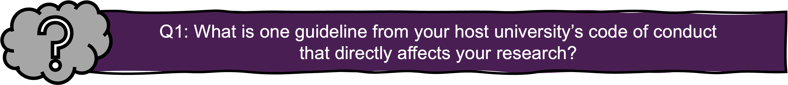
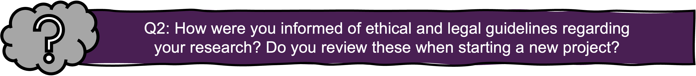

1. Introduction to Good Research Practice
Reading time: 7 min Reflection question #: 1, 2
As a researcher, you are responsible for conducting your work with integrity, ensuring that your methods and findings are ethical, reliable, and credible. Good Research Practice (GRP) is defined as “the collective ethical criteria on how good research should be conducted” (VR, 2024), and includes a set of ethical standards and guidelines that shape research practices across various disciplines. It provides the ethical and professional foundation for research across all disciplines, thereby ensuring the credibility and reliability of your research findings, safeguarding public trust in science, upholding the well-being of research subjects, and respecting the broader societal impact of discoveries you make. Simply put, producing high-quality research is impossible without a strong commitment to GRP (VR, 2024).
Your legal and ethical responsibilities
In Sweden, following GRP is not just an ethical obligation—it is a legal requirement. As a researcher, you must comply with national legislation, including:
In addition to legal frameworks, you must adhere to well-established integrity and ethics guidelines, such as:
and you also must follow broader ethical agreements that shape research integrity, including:
Beyond these formal guidelines, your institution may have its own code of conduct, such as the SciLifeLab code of conduct.

What GRP Means for You in Practice
Upholding GRP is not just about avoiding misconduct—it is about actively engaging with ethical principles in every aspect of your research. This means:
- Being aware of and following all relevant regulations that apply to your field.
- Maintaining good research habits and making ethical decisions at every stage of your work.
- Exercising sound professional judgment and resisting undue influence.
- Continuously updating your knowledge to keep pace with evolving ethical and legal standards.
The Role of Your Institution
You are not solely responsible for maintaining GRP standards in your research project. Research-performing organizations play a crucial role in fostering an ethical research environment by (SUHF, 2023):
- Providing training and mentorship to help you navigate GRP principles.
- Offering support structures, such as clear ethical guidelines.
- Ensuring infrastructure and technical support is in place, including well-defined procedures.
- Creating incentives that reward adherence to GRP.
At the same time, Swedish law (Law 1992:1434. The higher education act (‘Högskolelag’)) dictates that your research performing organization has to guarantee you academic freedom. This freedom also means that part of the responsibility to uphold research integrity lies on you (Section 4 of Law 2019:504). Ethical considerations and legal requirements may vary across disciplines, so it is your duty to stay informed and apply GRP principles appropriately within your field.

What you need to succeed
To be a responsible researcher, you must develop key competencies, including:
- A strong understanding of GRP principles and frameworks.
- The ability to apply ethical guidelines in real-world research scenarios.
- Good professional judgment and research habits.
- The ability to resist pressures that could compromise integrity.
- The skills to navigate ethical dilemmas with confidence.
What’s next?
The following chapters will guide you through how to apply GRP throughout an academic project—from securing funding to conducting experiments, collaborating nationally and internationally, publishing, and reviewing. Chapter 6 will cover research misconduct, including what happens if an accusation is made, and final Chapter 7 delves in to how GRP relates to Open Science principles.